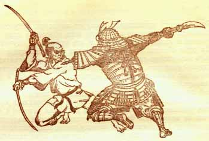
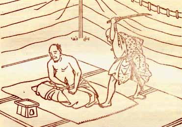
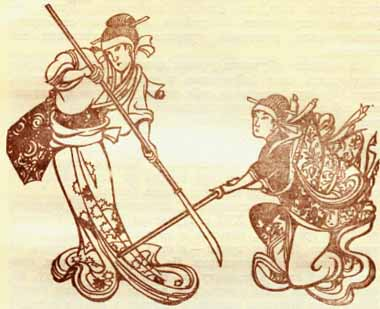

Samurai
|
For the samurai, the main value in life was a sense of proportion, which fostered, on the one hand, "refined taste", and on the other, self-control and endurance up to complete indifference to all everyday joys and pleasures. The appearance of a samurai under all circumstances was supposed to be complete fearlessness. Renunciation of all experiences left the samurai with only one, but truly ardent passion, and this passion was death. For what could be better evidence of the triumph of the autocracy of the spirit, of its own will, of its personal arbitrariness, finally, than the cold-blooded acceptance of death? The very first words of the samurai canon "Hagakure" said that "the path of a warrior is death" and that "a warrior must think about death day and night"; when it was necessary to choose between life and death, the samurai was supposed to choose death without hesitation. Samurai cult of suicide by ripping open the abdomen, the so-called hara-kiri is too well known to be discussed here. |
  |
As for the moral code of samurai, it included the following seven principles:
- Selfless adherence to duty, up to the dispassionate acceptance of death when it should be accepted (gi). The fulfillment of one's duty meant, first of all, unquestioning obedience to the master, respect for parents and tireless diligence in the matter of personal improvement.
- Perfect courage (yu). This principle required the samurai to be brave in battle, but also firm, patient and cold-blooded in times of danger.
- The humanity of all thoughts and actions (zin).
- Impeccable observance of the rules of etiquette (ray). It is about strict observance of all rules of conduct in the family and society.
- Sincerity (makoto). Sincere sincerity - modesty, spiritual chastity, contempt for wealth.
- Nice name (meye). Honor and glory are two very important things for a samurai.
- Unconditional devotion to the master (shugi). The last and most important principle of samurai, which required the samurai to be loyal to the master even in death.
|
The fulfillment of all these moral requirements only turned the life of a samurai and practicing martial arts into the true Path (do), that is, the unity of technical skill and spiritual perfection. This was the path of physical and moral asceticism, requiring from the samurai the strictest asceticism and selfless loyalty to his ideal. However, over time, samurai asceticism acquired a distinct aesthetic sound, giving rise to a special sophisticated primitivistic style in Japanese culture, which is known to Europeans, in particular, from the famous "tea ceremony" of the Japanese. |
 |